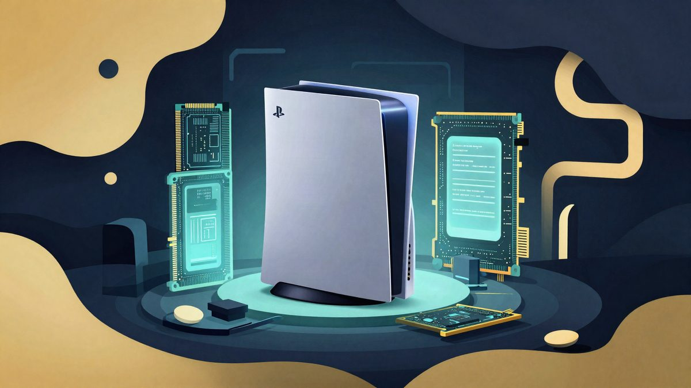

PS6 bi zbog memorije i SSD-a mogla probiti 1.000 dolara

Neslužbene procjene govore da bi samo memorija i SSD u PS6 mogli koštati više od 680 dolara, a GDDR7 je navodno skočio na 20 do 23 dolara po GB. Zbog toga se sve ozbiljnije priča da bi cijena konzole mogla prijeći 1.000 dolara, dok Sony istovremeno ne želi prodavati hardver s velikim gubitkom.
Sonyjeva PlayStation 6 još nije službeno najavljena, ali hardverske glasine već dižu obrve. Poznati leaker KeplerL2 tvrdi da samo memorija i NAND SSD u konzoli koštaju više od 680 dolara. Kad se doda procesor, ploča, hlađenje i ostale komponente, tržište nagađa da bi maloprodajna cijena mogla prijeći 1.000 dolara.
KeplerL2 je na forumu NeoGAF napisao da je "RAM + NAND alone is over $680". Nije objavio detaljnu razradu troška niti potvrdio da podaci dolaze iz Sonyjeva lanca nabave. Riječ je, dakle, o neslužbenoj procjeni, ali dovoljno konkretnoj da pokrene novu raspravu o cijeni buduće konzole.
Najviše upada u oči skok cijene GDDR7 memorije. Kad su Sony i Microsoft tek radili na čipovima za novu generaciju konzola, očekivalo se da će GDDR7 pasti na oko 3 dolara po GB. Prema tim informacijama, sad košta 20 do 23 dolara po GB, gotovo sedam puta više od početne procjene.
Razlog je rastuća potražnja AI podatkovnih centara, koji povlače sve više memorije i storagea, pa dobavljači dio proizvodnje preusmjeravaju na serversko tržište. Potrošačka elektronika zbog toga postaje skuplja, a PS6 je samo najnoviji primjer.
U opticaju su dvije neslužbene konfiguracije: 32 GB GDDR7 memorije uz 2 TB SSD ili 40 GB memorije uz 1 TB SSD. U prvoj varijanti, uz 20 dolara po GB, sama memorija došla bi na oko 640 dolara, bez SSD-a. Sony ipak kod velikih narudžbi obično koristi dugoročne ugovore, pa tržišna cijena nije nužno i stvarni trošak nabave.
KeplerL2 je ranije proizvodni trošak PS6 procjenjivao na oko 760 dolara, a kasnije na oko 960 dolara. Sony je već rekao da ne planira prodavati hardver uz velike gubitke, pa bi skuplji sastavni dijelovi mogli zakomplicirati cjenovnu politiku. Službenog datuma izlaska ni cijene za sada nema. Procjene govore da bi PS6 mogla stići krajem 2027. ili početkom 2028.
Izvor: unwire.hk